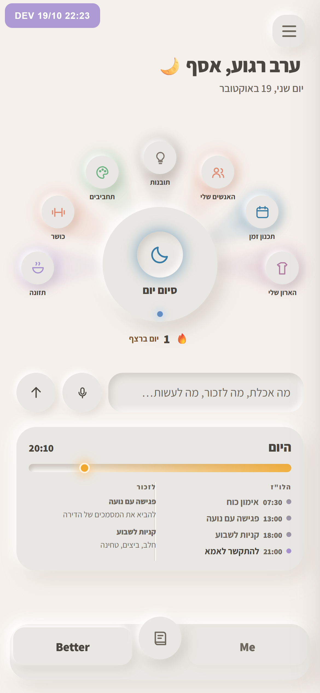
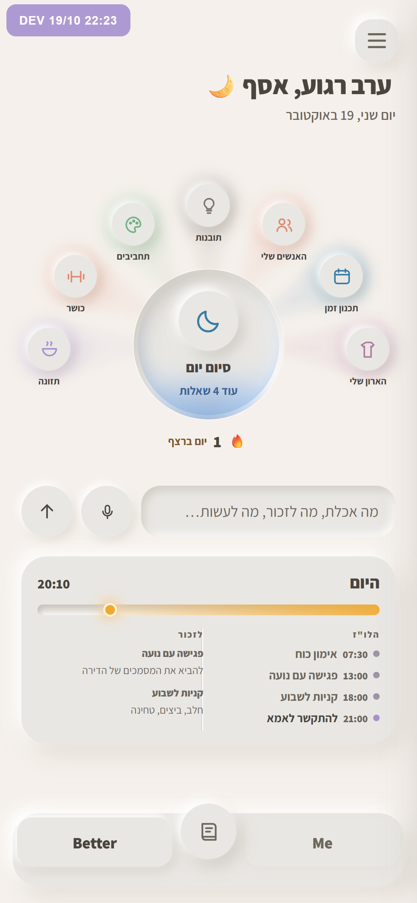
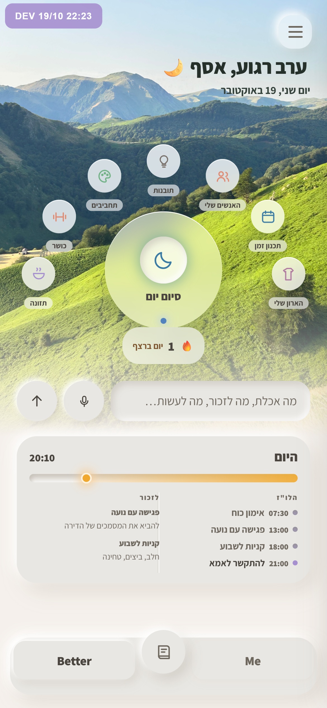
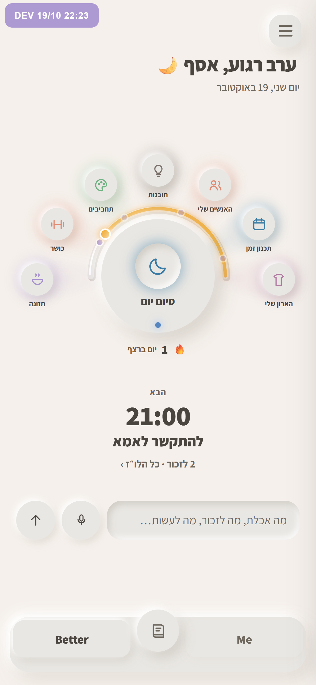

המסך הראשי: עוד שלושה כיוונים
כל אחד בנוי על ב׳, כמו שהוא עכשיו ב־dev, ומצולם על האפליקציה האמיתית עם אותם נתונים. המניפה נשארת, ואור הענבר נשאר רק ל"עכשיו" של היום. כל כיוון יוצא מתמונה שאתה שלחת לספריית הטעם. ב־dev לא שיניתי כלום.

ב׳
בסיס להשוואה.

באר שמתמלאת באור
סיום יום כבר לא כפתור בולט. הוא שקע במשטח, ואור כחול עולה בו מלמטה ככל שעונים על יותר שאלות של הערב. ריק אומר שעוד לא התחלת, מלא אומר שהיום סגור. מתחת לשם כתוב כמה שאלות נשארו. עוד לא נבנה: השקע אמור גם לנשום לאט, כמו בחיישן שאהבת.
מקור: lit-when-done ("משהו שנעשה נראה מואר") ו־dented-sensor-breathing.
הסיכון: זה שינוי בהתנהגות, לא רק במראה. צריך להחליט מה נחשב "מלא". והאור צריך גם סימן שני, הטקסט, למי שלא מבחין בו.

המניפה על התמונה של היום
החצי העליון של המסך הוא תמונה. כאן זו תמונת האחו שלך, ובהמשך זו יכולה להיות התמונה שצילמת היום. כל הכפתורים הם זכוכית מעומעמת מעליה, והתמונה נמסה אל הנייר לפני שורת הכתיבה.
מקור: glass-login-over-landscape והתמונה שצילמת.
הסיכון: זה שובר את "חומר אחד, לבן רך". תמונה בהירה מקשה על קריאת טקסט, ובלילה צריך תמונה אחרת.

שעון היום סביב המרכז
כרטיס "היום" נעלם, והיום עצמו הופך לקשת סביב סיום יום, מ־06:00 ועד חצות. החלק שעבר מואר בענבר עד הנקודה של עכשיו, וכל דבר בלו״ז הוא נקודה בצבע שלו על הקשת. מתחת למניפה כתוב רק הדבר הבא, בגדול. הלו״ז המלא נמצא בלחיצה.
מקור: neumorphic-fan-with-gauge, הקשת עם הנקודות בין המרכז לאריחים.
הסיכון: עם הרבה פריטים בלו״ז הנקודות צפופות. והענבר כאן אומר "עכשיו", בדיוק כמו בפס של היום. זה לא שימוש חדש באור.
כדי לבחור, כתוב לי בצ׳אט 1, 2, 3, או שילוב, למשל "1 ו־3".